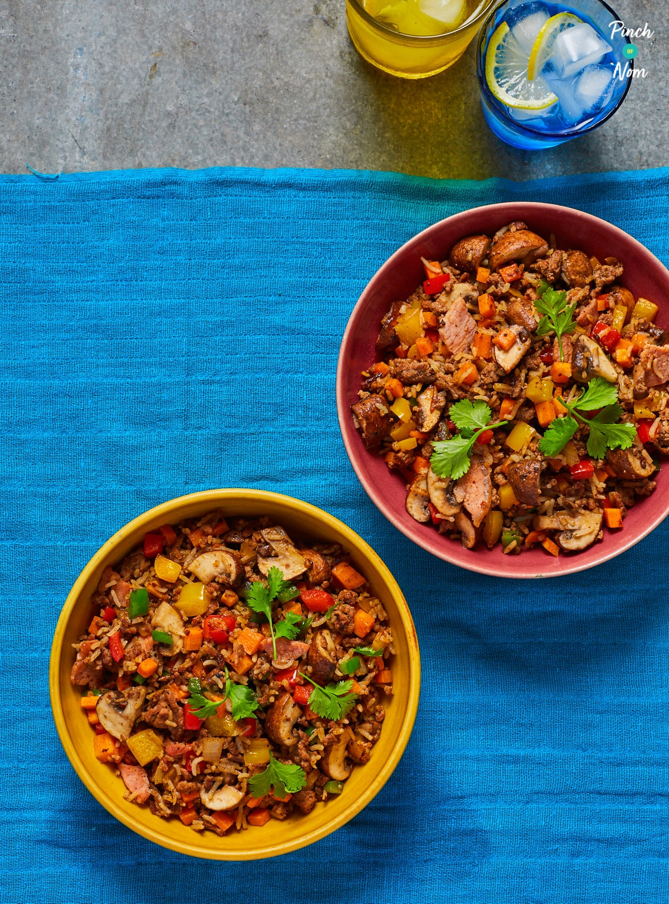

Cajun Rice

A bowl of Cajun Rice
This tasty Cajun rice is great for the whole family. It has a mild spice kick thanks to the cajun, but this is easily seasoned to personal taste. It takes 40 minutes to cook and prepare, and a guaranteed crowd pleaser.
Ingredients (approx. 4 servings)
- 200g rice
- 400g lean mince beef
- 4 bacon medallions
- 1/2 red pepper
- 1/2 yellow pepper
- 1/2 green pepper
- 1 onion
- 1 medium carrot
- 6 mushrooms
- 1 bunch of spring onions
- 1 beef stock pot
- 1 chicken stock cube
- 2 tsp cajun seasoning
- 200ml boiling water
- 1 dash Worcestershire sauce
- oil
Steps
- Cook the rice according to the packet instructions, with the chicken stock cube added to the rice water. Peel and cut the vegetables into cubes.
- Add the stock pot to the 200ml of boiling water and set aside to dissolve.
- Oil your pan, fry the mince, onions and bacon until browned.
- Add the Cajun seasoning and Worcestershire sauce and stir.
- Add the carrots, mushrooms, peppers and beef stock pot. Simmer until peppers start to soften.
- Add the cooked rice and spring onions. Stir to blend and coat all together.
- Add more Cajun seasoning, salt or pepper is desired.
- Plate up and enjoy
This will keep in the fridge for up to 4 days. It does freeze but tastes best fresh.